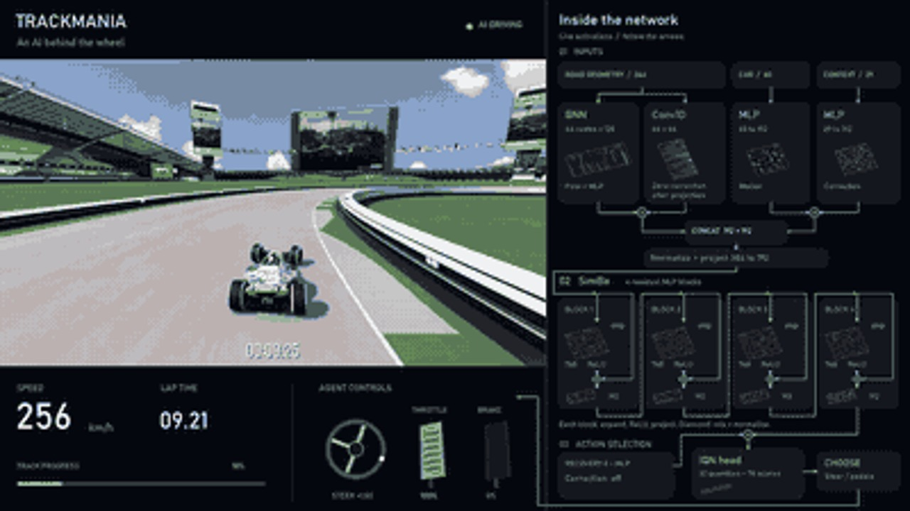

01 / THE STARTING LINE
The car is the visible part.
The system is the project.
Watch an agent drive Trackmania and the obvious question is: how did it learn to take that corner? The less visible question is just as interesting: what had to work before that corner could become a useful training example?
The game has to provide a trustworthy observation. A controller has to apply the selected action on time. The reward has to recognize real progress. Training has to remember the experience without mixing it with a different lap. And when an experiment stops, the next run needs to know exactly what it is continuing.
TrackmaniaRL is a Python library built around those connections. It supports agents for Trackmania 2020, but separates reusable learning machinery from the code that talks to the game. You can change an encoder, a temporal model, a replay sampler or a learner without rebuilding the entire experiment.
The repository originated from TMRL. Its current implementation is an extensive rewrite with its own package and public API; TMRL is not a runtime dependency. That lineage matters: this project belongs to a wider community exploring what racing games can teach us about learning, control and experimentation. [1]
This article follows the implementation and release record at 556adeef, the remote-main snapshot used for this draft.
02 / THE GAME LOOP
One decision. Then another.
Reinforcement learning starts with a small loop. An agent observes a situation, chooses an action and receives feedback. A policy is the rule—here, a learned model—that chooses what to do. The aim is to improve the reward accumulated over a sequence of decisions, so an action can be useful even when its benefit arrives later.
In a race, that distinction is familiar. Braking now can lose speed immediately and save the next corner. Accelerating into a wall can look promising for a moment. The learning problem is to connect those short decisions with their later consequences.
Telemetry + road geometry
or camera observations
Steer, accelerate
and brake
Next observation, reward
and episode outcome
TrackmaniaRL connects to Openplanet telemetry and applies controls through the configured backend. The default discrete action table has 78 actions: 13 steering levels, two throttle levels and three brake modes, including a timed tap. Those choices have physical consequences. Changing from gamepad to keyboard changes control behavior, so it also changes the experiment. [2]
The default value model uses an implicit quantile network, or IQN. Instead of learning only one estimate of future return per action, it models a distribution of returns through sampled quantiles. The policy can reduce those estimates to action scores. During training, exploration sometimes selects alternatives; evaluation measures the configured evaluation policy.
The distinction between acting and learning leads to the next architectural decision: give them separate responsibilities.
03 / WHAT THE AGENT SEES
A road can be data
before it becomes pixels.
A human sees a track. A model receives tensors. Choosing what to put in those tensors determines what information is available and what the model has to infer.
The starter geometry-based pipeline uses 20 normalized telemetry features, a [4, 60] boundary-lookahead tensor and a 60-element validity mask. The lookahead expresses left and right road boundaries in the car’s coordinate frame. Despite the “lidar” name, this is derived from supplied map geometry; it is not a physical ray-cast sensor or an image extracted from the screen. Each new map needs compatible, ordered geometry. [2]
A compact view of the road
Telemetry describes motion. Boundary coordinates describe the road ahead. This gives the model structured information, but requires map preparation.
Learning from the image
Camera frames are resized, normalized and optionally stacked. Telemetry still supplies reward and race termination; image observations do not make the whole system vision-only.
In the documented default camera settings, four grayscale frames form a [4, 84, 84] input. A short frame stack gives finite recent history. A recurrent model, such as a GRU, carries a learned hidden state. They are different ways of giving a decision context, with different replay and reset requirements.

neighbors action filter. Its context is not Transformer memory. Recording provenance [3]The film is useful because it makes the route from inputs to controls visible. It cannot tell us that a particular bright activation caused a particular steering decision. Keeping that boundary explicit makes the visualization more informative.
04 / BUILDING THE LIBRARY
Turn experiments into
replaceable parts.
A single training script can hold an entire experiment together. A library needs boundaries that survive changing the experiment. TrackmaniaRL’s RunSpec describes the components to assemble; resolve_run instantiates them and checks their contracts. The same configuration can be used from Python or the command line.
THE COMPOSED VALUE MODEL
- EncoderUnderstand each frame
- Temporal coreProcess history, if used
- Head + strategyEstimate action values
This separation supports scalar Q, QR-DQN, IQN and FQF through a shared discrete-value learner. Other supported paths include SAC, REDQ, TQC, discrete SAC and PPO. These names do not describe interchangeable switches with no constraints: the action space, model and sampling lifecycle still have to agree.
Let the game collect while the learner trains
For off-policy learning, an actor collects experience while a learner samples replay and updates the model. Actors can run on separate computers. Rollouts travel through a durable journal before reaching replay, and updated policy snapshots return asynchronously.
POLICY SNAPSHOTS RETURN TO ACTORS
The journal solves a practical problem: accepted experience must remain recoverable if a process stops. Checkpoints track the contiguous applied journal frontier so later data cannot hide earlier, unapplied data. A checkpoint also needs more than model weights: optimizer, replay and sampler state matter to training continuation. Architecture and run fingerprints guard exact resume.
Make the boundaries testable
Recurrent replay must respect episode history. An n-step learning target must stop at an episode boundary. A true terminal state must not bootstrap as though the race were continuing. These details rarely appear in a highlight video, but they determine whether training is learning from the intended problem.
The release history shows how much work went into such contracts: sequence handling, checkpoint identity, demonstration alignment, telemetry validation, action masks and shutdown behavior. The evolution is easier to understand as a sequence of infrastructure milestones than as a list of faster lap times. [5]
- 18 AUG 2026 · 1.0.0
A distinct library
The TrackmaniaRL package and CLI name, attribution, generated projects and release validation.
- 04 SEP 2026 · 1.1.0
Explicit composition
RunSpec 2.0, composed value models, checkpoint schema 2.0 and stronger replay and runtime contracts.
- 08–09 SEP 2026 · 1.2.0–1.2.7
Broader inputs, clearer evidence
Map-specific experiments separated from the public training path; recording, camera workflows and paired demonstrations expanded.
- 26–28 SEP 2026 · 1.2.10–1.2.11
Operational reliability
CUDA lifetime and replay fixes, benchmark provenance, process cleanup and a dedicated multi-computer setup guide.
05 / TEACHING PROGRESS
Reward the race
you actually want to run.
“Go fast” is an incomplete instruction. A car can move quickly in the wrong direction. Reward needs to connect local feedback with valid progress toward a finish.
The built-in trajectory reward combines configurable terms for time, accepted progress, finishing or failing, and optional signals such as collision and pace. It exposes the components separately so a large scalar reward can be investigated. This is the library’s documented reward; it should not be treated as a reconstruction of every historical experiment. [6]
Feedback from a change in potential, with the same discount used by learning.
Progress and pace can contribute potential-based shaping. At a terminal state, the next potential is set to zero; the configured reward discount must match the learner’s discount. These are part of the mathematical contract, not just tuning preferences.
Geometry also creates an easy trap. On a folded track, a nearby point in space may be much farther along the route. The reward bounds accepted progress using physically reachable motion, rather than granting a shortcut because another section happens to be close. That is an example of game integration and learning logic needing to agree.
Use demonstrations without losing their context
Recorded driving offers another starting point. Behavior cloning learns to imitate demonstrated actions; online RL can then pursue the configured reward. Demonstration archives bind the data to map identity, geometry, timing and control alignment. Splitting validation by complete laps helps avoid evaluating on neighboring frames from the same drive. A demonstration is useful evidence only when those relationships survive storage and loading. [4]
06 / BEYOND A FAST LAP
The slow lap belongs
in the chart.
A selected replay answers “can this controller do this?” A complete evaluation series asks a different question: “what happened across the attempts we committed to measuring?”
The September 8 V108 confirmation recorded 30 finishes in 30 attempts, with a mean telemetry time of 36.976667 seconds. This was the existing V107I network plus a fixed, map-specific neighbors action-support filter. Its weights were unchanged. The result belongs to that combined controller on that map, not to the default library agent. [7]

View all 30 recorded times
| Attempt | Time (s) | Skipped frames |
|---|---|---|
| 1 | 37.010 | 18 |
| 2 | 37.040 | 8 |
| 3 | 36.740 | 5 |
| 4 | 36.700 | 6 |
| 5 | 36.960 | 6 |
| 6 | 36.710 | 4 |
| 7 | 36.820 | 5 |
| 8 | 36.960 | 16 |
| 9 | 36.900 | 19 |
| 10 | 36.840 | 6 |
| 11 | 36.830 | 8 |
| 12 | 36.950 | 10 |
| 13 | 36.840 | 2 |
| 14 | 36.750 | 5 |
| 15 | 37.010 | 9 |
| 16 | 36.750 | 18 |
| 17 | 36.670 | 9 |
| 18 | 36.730 | 12 |
| 19 | 36.890 | 2 |
| 20 | 36.750 | 2 |
| 21 | 36.940 | 4 |
| 22 | 36.700 | 3 |
| 23 | 36.790 | 3 |
| 24 | 36.690 | 9 |
| 25 | 36.920 | 6 |
| 26 | 41.370 | 232 |
| 27 | 36.590 | 10 |
| 28 | 36.880 | 8 |
| 29 | 36.560 | 5 |
| 30 | 37.010 | 8 |
The mean beat the predeclared 37-second target by only about 23 milliseconds. The slow lap remains in that mean. The series also recorded 458 skipped producer telemetry frames and a maximum race-clock step of 80 milliseconds. It is an observed result under those conditions, not a zero-drop reference or a guarantee about future runs.
Skipped telemetry frames do not directly subtract time from a lap: finish time normally comes from the terminal race clock. They can still affect control by delaying feedback. That is why timing validity and latency belong beside finish rate and lap statistics. A fast result without measurement context is difficult to interpret.
The neural-flow film is a separate five-attempt recording, with the fastest finished attempt selected for display. Its game overlay reads 36.658 seconds; telemetry reads 36.650. The contributor reports approximately 12 hours of prior training. Capturing the film did not update the weights, and the recording does not establish generalization to unseen maps. [3]
07 / THE NEXT EXPERIMENT
Build something you
can change—and measure.
The practical outcome is a library that lets an experiment move across several choices: geometry or camera inputs, feed-forward or temporal models, demonstrations or online collection, local or distributed off-policy training.
A minimal Python entry point makes that composition visible. Given a configured run.yaml:
from pathlib import Path
from trackmaniarl import RunSpec, Trainer, resolve_run
config = Path("run.yaml").resolve()
run = resolve_run(RunSpec.from_yaml(config), base_dir=config.parent)
try:
result = Trainer(run).train()
print(result.transitions, result.updates)
finally:
run.logger.close()The game-free quickstart is the smallest way to try the lifecycle. The Trackmania guide adds Openplanet, controls and map preparation. This snapshot requires Python 3.12. Windows and desktop Linux are supported by the library; game hosting through Proton on Linux remains experimental, and WSL is not a supported game host.
There is still a gap between a strong controller on one prepared map and a general racing agent. Closing it calls for complete evaluations on new maps, controlled comparisons of representations and better evidence about failure and recovery. A composable library makes those questions easier to ask. Careful measurement makes the answers worth keeping.
SOURCES / FURTHER READING
The record behind the story.
Implementation claims refer to the pinned repository snapshot 556adeefdb401dae5d211e836f44ea734a48aa05. The article is a draft for author review.
- Project lineage and attribution
- Library architecture and data contracts
- Neural-flow film: model, selection and provenance
- RunSpec, replay, model composition and imitation learning
- Release history
- Reward function and component contracts
- V108: complete experiment ledger and confirmation
Inspiration and community context
These articles informed the explanatory approach and are useful companion reads. Their experiments and results are separate from TrackmaniaRL’s.
- Autonomous Racing with Reinforcement Learning — Anisha Bhatnagar and Ashwin Kumar Udayakumar.
- Introduction to Deep Reinforcement Learning and How PedroAI works — Pierre Porcher.
- The Trackmania series — Hall of Impossible Dreams.